Run superline config to set up your prompt in the terminal: add, move and tweak widgets and
recolor a theme while a live preview redraws the prompt after every key. Below the editor guide, the
reference documents the config file itself, for when you'd rather edit the JSON by
hand.
Open it
superline config edits ~/.config/superline/config.json, writing the default
config first if there isn't one. --config <path> edits another file, and a symlinked
config is saved through to the file it points at.
Save it
s saves the config and any theme you changed, and the next prompt picks them up—no
reload. u undoes, U redoes, and q asks before dropping unsaved changes.
Keep your edits
Widgets, options and theme keys the editor doesn't know are kept exactly as written. e opens
the file in $EDITOR and reloads it afterwards, and ? lists every key.
Add and arrange widgets
The Layout page lists each row, its left and right sides, and the widgets on
them, top to bottom. The last row is the one you type on. a opens a filterable list of every
widget and adds your pick just below the cursor, so on a side's heading it goes first.
↑↓jk
Move the cursor.
a
Add a widget below the cursor.
d
Delete the widget, or the whole row.
JK
Move the widget, across sides and rows. On a row, move the row.
⏎ on a widget moves to its options, and on Settings to the theme and the
update check. Each option shows its value, or its default in gray, with a line of help underneath. The
preview picks up every change straight away, before anything is saved.
↑↓
Select an option.
⏎space
Toggle a switch, cycle a choice, or type a new value.
←→
Cycle through the choices. On Settings, step through the themes; ⏎ there opens the theme picker.
2 opens the Theme page, which edits the theme file the config names one module at a time,
with a swatch and the fallback for every property. c duplicates the open theme into a new
file next to the config and points the config at it. p opens the theme picker, which lists the
themes that come with superline and the theme files next to the config, and draws your prompt in each
one as you move through them. ⏎ switches to it; a bundled theme gets a file next to the
config only once you edit and save it. c duplicates the highlighted theme into a new file to edit.
⏎ on theme under Settings opens the same picker.
21
Theme page, and back to the layout. t switches.
p
Pick a theme, previewing each one on your prompt. i types a file name instead.
cn
Duplicate the theme into a new theme file. In the picker, c duplicates the highlighted theme.
⏎
On a color, open the 256-color picker, which previews as you move. On an icon, search every Nerd Font glyph.
←→
Step a color by one code.
i
Type a color name, a 0–255 code, or text.
x
Reset the property to its fallback.
⏎space
On a bold, italic or underline switch, turn it on or off.
⏎
On a color list, edit it one color per line: a/I add after or before, d delete, J/K move, c copy.
Everything the editor changes is plain JSON, and this reference documents the config file and every
segment it can contain. Each entry lists the segment's options with their types and defaults, followed by
examples. Each example pairs a screenshot with the JSON that produced it. Segments with several options
have a minimal example and one that sets every option.
The config file
On first run superline writes a default config to ~/.config/superline/config.json. Changes
take effect on the next prompt. superline config opens an interactive editor for it with a
live preview of the prompt, and superline show --config <path> renders any other file.
Key
Type
Default
Description
theme
string
"rainbow"
A path to a theme file; .json is optional, so "rainbow" is rainbow.json.
Stop the once-a-day check for a newer release and the notice it prints above the prompt.
update.auto
boolean
true
Install a newer release in the background instead of only announcing it. Prompts drawn while it installs show how far it has got, and the first prompt on the new version says it was upgraded. Set to false to only be notified. Applies to prebuilt release binaries (not Homebrew, which updates with brew upgrade); a build from source keeps showing the notice until superline upgrade replaces it.
Every module can be written as a bare string or as an object with options, so "git" and
{ "git": {} } mean the same thing. Modules with required options must use the object form.
Besides its own options, every module except text, separator and
padding takes padding: where each segment it draws gets a space beside its
text. "small" adds none, "large" one on each side, and "left" or
"right" one on that side only, as in { "git": { "padding": "small" } }.
Without it, a module keeps its own spacing:
Module
Padding when unset
cwd, last_cmd_duration
left
cmd, shell, small_spacer
small
python
large; venv label right
Every other module
large
The examples for each module show just that module's entry, to go in a row's left or
right array; the screenshots include neighboring segments for context. Layout examples
show a whole config, since they change how every segment around them is drawn.
Rows
Each row has a required left array and an optional right array of segments.
Every row but the last is printed in full. The last row's right side is drawn by the
shell's own right prompt (fish_right_prompt, zsh's RPS1, nushell's
PROMPT_COMMAND_RIGHT), so it stays in place while you type. Bash and PowerShell have no right
prompt, so on those shells the last row's right isn't shown.
Ends the current block and clears the background. The next segment starts a new block with a reversed
separator. 0 is common at the end of a right array to close the last block.
The current directory, one segment per path component, with your home directory shown as
~. Once the path is longer than max_length characters and deeper than
wanted_seg_num components, it's cut down to wanted_seg_num components: the
first half, then ..., then the rest.
Option
Type
Default
Description
max_length
integer
required
Characters (after ~) before the path is shortened.
wanted_seg_num
integer
required
Components to keep once it is.
resolve_symlinks
boolean
false
Show the resolved path instead of the path used to reach the directory. The example below sits in ~/work/current, a link to a deep directory.
Theme options modules.cwd
Property
Type
Styles
If unset
path_fg
color
Text of every path component.
defaults.fg
bg_colors
color list
Backgrounds for successive path components, repeating from the start when the path is longer.
[defaults.bg]
home_icon
string
Stands in for the home directory at the start of the path; "" hides it.
"~"
root_icon
string
Shown on its own at the filesystem root.
"~"
ellipsis_icon
string
Stands in for the components a long path leaves out.
A lock icon, shown when the current directory is not writable. No config options. Themed as readonly.
Theme options modules.readonly
Property
Type
Styles
If unset
fg
color
The lock icon.
defaults.fg
bg
color
Segment background.
defaults.bg
icon
string
The lock icon; "" hides the widget.
U+E0A2
In a read-only directory
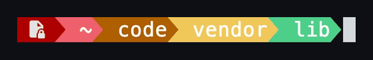
"read_only"
cmd
The prompt character before your input. After a failed command it turns red and shows the exit code.
No config options; the symbol comes from the theme's cmd.user_symbol.
Theme options modules.cmd
Property
Type
Styles
If unset
passed_fg
color
The prompt symbol after a successful command.
defaults.fg
passed_bg
color
Background after a successful command.
defaults.bg
failed_fg
color
The exit code after a failed command.
defaults.bg
failed_bg
color
Background after a failed command.
defaults.fg
user_symbol
string
The prompt symbol.
"$"
root_symbol
string
The prompt symbol when running as root.
"#"
After a success, then a failure
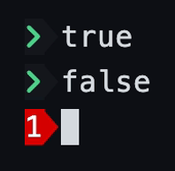
"cmd"
last_cmd_duration
How long the previous command took, shown only when it ran for at least min_run_time.
Option
Type
Default
Description
min_run_time
integer
required
Threshold in milliseconds. The default config uses 50.
Theme options modules.last_cmd_duration
Property
Type
Styles
If unset
fg
color
The duration text.
defaults.fg
bg
color
Segment background.
defaults.bg
time_icon
string
Icon after the duration.
U+F1ACC
min_run_time: 500
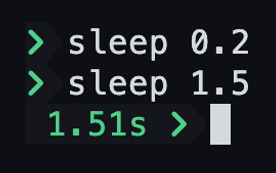
{ "last_cmd_duration": { "min_run_time": 500 } }
shell
The name of the running shell: fish, zsh, bash, pwsh or nu. No config options.
Theme options modules.shell
Property
Type
Styles
If unset
fg
color
The shell name.
defaults.fg
bg
color
Segment background.
defaults.bg
Default
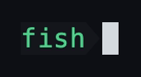
"shell"
jobs
A gears icon and the number of running background jobs owned by this shell, hidden when there are none.
Stopped jobs aren't counted, since some shells keep them in the job table indefinitely. No config options.
Theme options modules.jobs
Property
Type
Styles
If unset
fg
color
The icon and job count.
defaults.fg
bg
color
Segment background.
defaults.bg
icon
string
Icon before the job count.
U+F085
With two background jobs
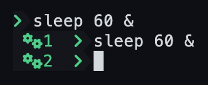
"jobs"
Git & GitHub
git
The branch, then modified, untracked and staged counts, then commits ahead of and behind the upstream.
A GitHub logo appears when the repo has a remote and links to its web page. A detached HEAD shows the
short hash, followed by the branch it's the tip of, if any. When the repo has linked worktrees
(git worktree add), their count follows the branch. Inside a linked worktree it reads
index/count, such as 3/15, numbered in git worktree list order.
Status collection waits up to status_timeout_ms. If it takes longer, the last cached result
is shown while a refresh finishes in the background; before anything is cached the segment says
loading….
Option
Type
Default
Description
status_timeout_ms
integer
250
How long to wait for a fresh status before falling back to the cache.
backend
string
"auto"
"cli" runs git, the fastest option on big trees since it's the only one that uses git's untracked cache and fsmonitor.
"gitoxide" reads the repo in-process and needs no git binary.
"auto" picks by the size of .git/index, and uses gitoxide when git isn't on your PATH.
worktrees
boolean
true
Show the linked-worktree count next to the branch, as index/count inside a linked worktree. Nothing shows when there are none.
repo
boolean
true
Show the remote segment: the GitHub logo linking to the repository and the ahead/behind counts.
Theme options modules.git
Property
Type
Styles
If unset
clean_fg
color
Branch name when the working tree is clean.
defaults.fg
clean_bg
color
Branch background when clean.
defaults.bg
dirty_fg
color
Branch name when there are changes.
defaults.fg
dirty_bg
color
Branch background when there are changes.
defaults.bg
notstaged_fg
color
Modified-file count.
defaults.fg
notstaged_bg
color
Modified-file background.
defaults.bg
untracked_fg
color
Untracked-file count.
defaults.fg
untracked_bg
color
Untracked-file background.
defaults.bg
staged_fg
color
Staged-file count.
defaults.fg
staged_bg
color
Staged-file background.
defaults.bg
conflicted_fg
color
Conflicted-file count.
defaults.fg
conflicted_bg
color
Conflicted-file background.
defaults.bg
remote_fg
color
GitHub logo and ahead/behind counts.
defaults.fg
remote_bg
color
Remote segment background.
defaults.bg
branch_icon
string
Icon before the branch name.
U+E0A0
linked_worktree_icon
string
Replaces branch_icon inside a linked worktree.
U+F1BB
detached_icon
string
Between a detached HEAD's commit and the branch it sits on.
U+F432
notstaged_icon
string
After the modified-file count.
U+EAE9
untracked_icon
string
After the untracked-file count.
"?"
staged_icon
string
After the staged-file count.
"+"
conflicted_icon
string
After the conflicted-file count.
U+273C
remote_icon
string
GitHub logo that opens the remote segment.
U+E709
ahead_icon
string
After the number of commits ahead of the upstream.
U+F062
behind_icon
string
After the number of commits behind the upstream.
U+F063
worktree_icon
string
Icon before the linked-worktree count (index/count inside a linked worktree) next to the branch. "" shows just the numbers.
A clickable link to the current branch's pull request, looked up through the
gh CLI. Its color shows the state: draft, open,
merged or closed. The lookup runs in the background and is cached, so the link appears on a later
prompt once it's ready. It's skipped on main, master and develop.
Option
Type
Default
Description
status
boolean
true
Add a dot for CI while the PR is open: green passing, yellow pending, red failing.
Theme options modules.pr
Property
Type
Styles
If unset
draft_fg
color
Link text for a draft PR.
defaults.fg
draft_bg
color
Background for a draft PR.
defaults.bg
open_fg
color
Link text for an open PR.
defaults.fg
open_bg
color
Background for an open PR.
defaults.bg
merged_fg
color
Link text for a merged PR.
defaults.fg
merged_bg
color
Background for a merged PR.
defaults.bg
closed_fg
color
Link text for a closed PR.
defaults.fg
closed_bg
color
Background for a closed PR.
defaults.bg
status_success_fg
color
CI dot when checks pass.
defaults.fg
status_failure_fg
color
CI dot when checks fail.
defaults.fg
status_pending_fg
color
CI dot while checks run.
defaults.fg
icon
string
Icon before the PR number.
U+EA64
status_icon
string
The CI dot.
"●"
Minimal: open PR, checks passing
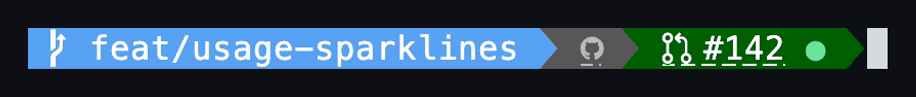
"pr"
All options: CI dot hidden
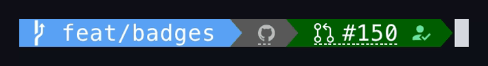
{ "pr": { "status": false } }
pr_diff
The lines added and deleted in the current branch's pull request, such as +426 -35, in a
segment of its own. It reads the same cached gh lookup as pr,
so it appears alongside it and costs no extra requests. No config options.
Theme options modules.pr_diff
Property
Type
Styles
If unset
added_fg
color
The count of lines added.
"green"
removed_fg
color
The count of lines deleted.
"red"
bg
color
Background of the segment.
defaults.bg
Next to the PR it counts
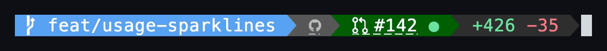
"pr_diff"
Languages
python, node, java and cargo each show their logo when
the current directory belongs to a project, and add the version when one is pinned.
Versions come first from mise configs (mise.toml,
.mise.toml, .config/mise/config.toml, .tool-versions and their
.local variants), searched upwards from the current directory. A mise version beats one from
a language-specific file, and is marked with a tools icon (Nerd Font md-tools, U+F1064), which themes can change or hide with each
module's mise_icon. The global mise config in $HOME is ignored, so a global
pin doesn't make the modules appear in every directory.
python
Detects an active virtualenv (venv, conda or mamba), or a directory with a .python-version
or pyproject.toml. Inside a venv the version is the interpreter the env was built from, read
from pyvenv.cfg or conda-meta. Outside one it's the pinned version. Also
accepted as python_env.
Option
Type
Default
Description
version
boolean
true
Show the Python version.
venv
boolean
true
Show the active env's name.
Theme options modules.python
Property
Type
Styles
If unset
env_fg
color
Logo, venv name and pinned version.
defaults.fg
env_bg
color
Background of that segment.
defaults.bg
version_fg
color
Interpreter version shown next to an active venv.
defaults.fg
version_bg
color
Background of the version segment.
defaults.bg
mise_icon
string
Marker for a version pinned by mise; "" hides it.
U+F1064
icon
string
The Python logo.
U+E73C
pyproject_icon
string
After the logo in a directory with a pyproject.toml.
U+F150E
Also read from modules.py, the key this module had before it was renamed.
Minimal, in an active venv
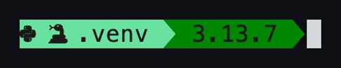
"python"
Minimal, pinned project without a venv
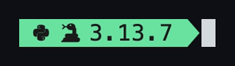
"python"
All options
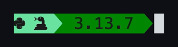
{ "python": { "version": true, "venv": false } }
node
Detects the version nvm has activated, a mise pin, or an .nvmrc. A version that only comes
from .nvmrc gets a darker background, since nothing has activated it. Also accepted as
nvm.
Option
Type
Default
Description
version
boolean
true
Show the Node version.
Theme options modules.node
Property
Type
Styles
If unset
fg
color
Logo and version.
defaults.fg
bg
color
Background for a version nvm or mise has activated.
defaults.bg
inactive_bg
color
Background for a version that only comes from .nvmrc.
defaults.bg
mise_icon
string
Marker for a version pinned by mise; "" hides it.
U+F1064
icon
string
The Node.js logo.
U+ED0D
Also read from modules.nvm, the key this module had before it was renamed.
Minimal
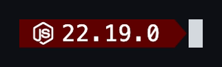
"node"
All options
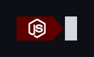
{ "node": { "version": false } }
java
Detects a mise pin, or the .sdkmanrc that sdkman's auto-env has exported for the current
directory (through SDKMAN_ENV). Shows the major version and the JDK distribution. Also
accepted as sdkman.
Option
Type
Default
Description
version
boolean
true
Show the major version.
jdk
boolean
true
Show the distribution (Temurin, Corretto, ...).
Theme options modules.java
Property
Type
Styles
If unset
fg
color
Logo, version and distribution.
defaults.fg
bg
color
Segment background.
defaults.bg
mise_icon
string
Marker for a version pinned by mise; "" hides it. Read from java only.
U+F1064
icon
string
The Java logo.
U+F0176
Also read from modules.sdkman, the key this module had before it was renamed.
Minimal
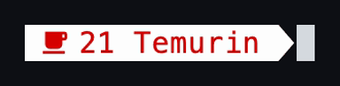
"java"
All options
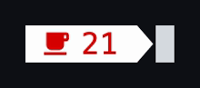
{ "java": { "version": true, "jdk": false } }
cargo
Detects a Cargo.toml in the current directory. The version is a mise pin, or the channel from
rust-toolchain.toml (or the legacy rust-toolchain), searched upwards as rustup
does so workspace members pick up the root's pin.
Option
Type
Default
Description
version
boolean
true
Show the toolchain version. The mise marker stays either way.
Theme options modules.cargo
Property
Type
Styles
If unset
fg
color
Logo and toolchain version.
defaults.fg
bg
color
Segment background.
defaults.bg
mise_icon
string
Marker for a version pinned by mise; "" hides it.
U+F1064
icon
string
The Rust logo.
U+E68B
Minimal, rust-toolchain.toml
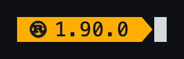
"cargo"
Minimal, pinned by mise
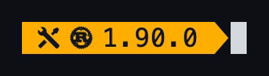
"cargo"
All options
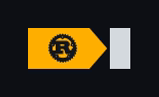
{ "cargo": { "version": false } }
AI usage
ai_usage
Claude or Codex subscription usage, read through the provider's CLI on your PATH. It's
refreshed in the background and cached, so rendering never waits on the provider. Add the module more
than once to show both providers, or the same one in different styles.
Until the first reading is cached it shows …. If the CLI isn't installed it shows
?, and if it's installed but logged out it shows a logged-out user icon.
Option
Type
Default
Description
provider
string
required
"claude" or "codex".
session
boolean
true
Show the five-hour window.
weekly
boolean
true
Show the seven-day window.
fable
boolean
false
Show Claude's weekly Fable window. Ignored for Codex.
display
string
"percentage"
How each window is drawn; see the styles below.
width
number
5
Cells in a bar, capped_bar or block display, from 1 to 50.
threshold
number
none
Percent used at which the whole widget switches to the theme's ai_usage.threshold_bg. Any visible lane counts, credits included.
session_label
string
"5h "
Labels for each window. The spaces keep adjacent windows apart; "" drops the label.
weekly_label
string
" 7d "
fable_label
string
" F "
credits
boolean
false
Add a lane for usage credits: dollars against the limit for Claude, a per-seat count for Codex.
credits_display
string
follows display
Any display style, or "numeric" for raw figures such as $12.50/$50.
credits_label
string
" C "
Label for the credits lane.
credits_only_when_limited
boolean
false
Show credits only once a window has hit 100%, which is when the provider starts spending them.
session_time_remaining
boolean
false
Show a countdown to the five-hour window's reset.
session_time_remaining_only_at_limit
number
0
Fraction from 0 to 1: only show the countdown once the session is at least this full. 0.8 shows it from 80%.
hover
boolean
true
In iTerm2, hovering over the provider icon shows every window's percentage. Not added for the percentage and numeric displays.
Display style
Also accepted
Looks like
"percentage"
percent, pct
5h 61%
"bar"
bars
5h ▄▄▄▁▁
"capped_bar"
capped
5h ▗▄▄▄▁▁▖
"block"
blocks
5h ███░░; a cell the reading ends halfway into is ▒
"sparkline"
spark
5h ▅
"numeric"
num
Raw figures for credits; same as percentage for windows.
With any display except percentage and numeric, which already print the figures,
the provider icon carries an iTerm2 hidden annotation: hover over it to see every window that has a
reading, drawn or not, such as 5h: 61% used · 7d: 41% used · Fable: 22% used. Other terminals
ignore it. Inside tmux it only reaches iTerm2 with allow-passthrough on and the sequence
wrapped for passthrough, which superline doesn't do. The Claude Code status
line leaves it out, since Claude Code drops it.
Theme options modules.ai_usage
Property
Type
Styles
If unset
claude_fg
color
Claude widget text.
defaults.fg
claude_bg
color
Claude widget background.
defaults.bg
codex_fg
color
Codex widget text.
defaults.fg
codex_bg
color
Codex widget background.
defaults.bg
threshold_bg
color
Background once a visible lane crosses threshold.
defaults.bg
claude_icon
string
Claude logo that opens the Claude widget.
U+EC82
codex_icon
string
OpenAI logo that opens the Codex widget.
U+EC81
reset_icon
string
Before the time left until the session window resets.
"↻"
loading_icon
string
In place of a reading until the first refresh lands.
"…"
logged_out_icon
string
In place of a reading when the provider CLI has no signed-in account.
U+F235
not_installed_icon
string
In place of a reading when the provider CLI is not installed.
superline can also draw the status line at the
bottom of Claude Code. superline install claude-code points statusLine in
~/.claude/settings.json at superline claude-code (another command is only
replaced with --force) and writes the default layout to
~/.config/superline/claude-code.json. Or set it by hand:
The layout file takes the same keys as the config file, and its theme
names the same kind of theme file, so the prompt and the status line can share one.
superline config --claude-code edits it with a preview drawn from sample session data. Every
row is drawn in full; a row whose widgets all have nothing to show is left out.
Claude Code hands the command the session's data on stdin, and superline moves into the session's
directory first, so cwd, git, the
language modules and the rest describe where Claude is working.
ai_usage with "provider": "claude" shows the five-hour and
seven-day rate limits Claude Code reports instead of asking the CLI (Pro and Max plans, after the first
response), and pr falls back to the pull request Claude Code reports, without
a CI dot, until the gh lookup has one. cmd, last_cmd_duration,
shell and jobs have no shell to read there.
The right side is aligned to $COLUMNS less a four-column margin, since Claude Code indents
the status line. Change it with --margin <n>, or set the width with
--columns <n>, in the command.
The claude_* widgets below draw only in the status line, and each is left out while Claude
Code has nothing for it, such as no vim mode, no agent or no cost yet. The screenshots use sample data.
The session's estimated cost in USD, as Claude Code works it out.
Theme options modules.claude_cost
Property
Type
Styles
If unset
fg
color
The session cost.
defaults.fg
bg
color
Segment background.
defaults.bg
Session cost
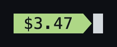
"claude_cost"
claude_duration
How long the session has been running.
Option
Type
Default
Description
api
boolean
false
Show the time spent waiting on the API instead.
Theme options modules.claude_duration
Property
Type
Styles
If unset
fg
color
The session duration.
defaults.fg
bg
color
Segment background.
defaults.bg
icon
string
Before the duration; "" hides it.
U+F051B
Session duration
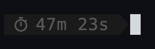
"claude_duration"
claude_lines
Lines added and removed this session, each in its own color.
Theme options modules.claude_lines
Property
Type
Styles
If unset
added_fg
color
The count of lines added.
defaults.fg
removed_fg
color
The count of lines removed.
defaults.fg
bg
color
Segment background.
defaults.bg
Lines added and removed
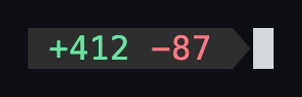
"claude_lines"
claude_cache
The prompt cache's hit ratio, on one background while the cache is warm and another once it has gone cold. Left out until Claude Code has seen caching.
Theme options modules.claude_cache
Property
Type
Styles
If unset
fg
color
The prompt cache hit ratio.
defaults.fg
warm_bg
color
Background while the cache is warm.
defaults.bg
cold_bg
color
Background once the cache has gone cold.
warm_bg
icon
string
Before the hit ratio; "" hides it.
U+F00E8
Warm cache hit ratio
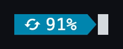
"claude_cache"
claude_vim
The vim mode while vim mode is on, with a background per mode.
Theme options modules.claude_vim
Property
Type
Styles
If unset
fg
color
The vim mode.
defaults.fg
normal_bg
color
Background in NORMAL mode.
defaults.bg
insert_bg
color
Background in INSERT mode.
normal_bg
visual_bg
color
Background in VISUAL and VISUAL LINE modes.
normal_bg
icon
string
Before the mode; "" hides it.
U+E62B
INSERT mode
"claude_vim"
claude_agent
The agent's name when Claude Code runs with --agent.
Theme options modules.claude_agent
Property
Type
Styles
If unset
fg
color
The agent name.
defaults.fg
bg
color
Segment background.
defaults.bg
icon
string
Before the agent name; "" hides it.
U+EC67
Running as an agent
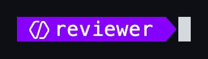
"claude_agent"
claude_session
The session's name, from --name or /rename, or its generated title.
Option
Type
Default
Description
max_length
number
30
Cut longer names short with an ellipsis; 0 never does.
Theme options modules.claude_session
Property
Type
Styles
If unset
fg
color
The session name.
defaults.fg
bg
color
Segment background.
defaults.bg
icon
string
Before the session name; "" hides it.
U+EC4F
Session name
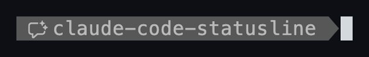
"claude_session"
System
os
An icon for the operating system family: Linux, macOS, Windows, Android or one of the common BSDs.
The family is fixed when superline is compiled, so no lookup happens at render time. No config options.
Theme options modules.os
Property
Type
Styles
If unset
fg
color
The icon.
defaults.fg
bg
color
Segment background.
defaults.bg
symbol
string
Icon used for every operating system.
per-OS Nerd Font icon
macos_symbol
string
Icon on macOS. Takes precedence over symbol, as do the keys below.
symbol
linux_symbol
string
Icon on Linux.
symbol
windows_symbol
string
Icon on Windows.
symbol
android_symbol
string
Icon on Android.
symbol
freebsd_symbol
string
Icon on FreeBSD. Also openbsd_symbol, netbsd_symbol, dragonfly_symbol, illumos_symbol, solaris_symbol, haiku_symbol and unknown_symbol.
symbol
Default
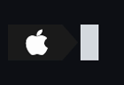
"os"
memory_usage
RAM usage as a percentage, with swap alongside once it's at least 1% used. The reading is a local system call, so
it is not cached. Available on Linux, macOS and Windows.
Option
Type
Default
Description
threshold
integer
none
Hide the segment below this percentage. Without it, it's always shown.
Literal text in the theme's default colors. Unicode and punctuation are kept. Control characters and
line breaks are shown as visible escapes, and shell prompt syntax is quoted, so a config value can't
inject anything into the prompt. It has no theme options of its own and uses the theme's defaults.
Value
Type
Default
Description
text
string
required
The text to show.
Default
{ "text": "hello 🌈" }
username, hostname, local_ip
The current user (in the root color when running as root), the machine's hostname (shortened to the part before the first dot on macOS, like hostname -s), and its primary
non-loopback IPv4 address, read from the network interfaces without opening a socket. They take no
options. "user", "host" and "localip" still work as older
spellings. No screenshots are shown for these, since they would expose details of the machine that took them.
Theme options modules.username
Property
Type
Styles
If unset
fg
color
The username.
defaults.fg
bg
color
Segment background.
defaults.bg
root_bg
color
Background when running as root.
defaults.bg
Theme options modules.hostname
Property
Type
Styles
If unset
fg
color
The hostname.
defaults.fg
bg
color
Segment background.
defaults.bg
Theme options modules.local_ip
Property
Type
Styles
If unset
fg
color
The address.
defaults.fg
bg
color
Segment background.
defaults.bg
"username", "hostname", "local_ip"
battery
A low-battery warning with the charge and charging state. It appears only at 10% or below, and stays
hidden on machines without a battery. No config options.
Theme options modules.battery
Property
Type
Styles
If unset
fg
color
Charge and charging state.
defaults.fg
bg
color
Segment background.
defaults.bg
full_icon
string
Icon when the battery is full.
U+F0079
charging_icon
string
Icon while charging.
U+F0084
discharging_icon
string
Icon while discharging.
U+F0083
empty_icon
string
Icon when the battery is empty.
U+F008E
unknown_icon
string
Icon when the charging state is unknown.
U+F0091
"battery"
sudo
Shows a key symbol (U+26BF) while your sudo credentials are cached. The check is non-interactive
(sudo -Nnv) and runs in the background, so it never prompts for a password or extends the
sudo timestamp. Because of that, the marker can linger for up to ten seconds after the credentials expire. No config options.
Theme options modules.sudo
Property
Type
Styles
If unset
fg
color
The key symbol.
defaults.fg
bg
color
Segment background.
defaults.bg
symbol
string
Symbol shown while credentials are cached.
"⚿"
"sudo"
kubernetes
The active Kubernetes context, followed by its namespace in parentheses when the context sets one. It reads
$KUBECONFIG (a list of kubeconfig files, merged the way kubectl merges them) or
~/.kube/config, so a kubectl config use-context shows on the next prompt. Hidden when
there is no readable kubeconfig or no current context. No config options.
Theme options modules.kubernetes
Property
Type
Styles
If unset
fg
color
Context and namespace.
defaults.fg
bg
color
Segment background.
defaults.bg
icon
string
Icon before the context; "" hides it.
U+F10FE
"kubernetes"
Themes
theme is a path to a theme file, and .json is optional:
"rainbow" is rainbow.json. Paths starting with / are absolute;
anything else is relative to the config directory. If the theme fails to load, superline falls back to
rainbow.
superline comes with three themes,
rainbow,
simple and
gruvbox.
When the config names one of them and its file isn't in the config directory, superline uses the copy
built into the binary and writes nothing. Editing a bundled theme on the Theme page and saving writes
its file, which takes the built-in copy's place until it is deleted. The theme
picker in superline config previews each theme on your own prompt before you switch, and
the Theme page edits a theme file with a live preview.
A theme file has defaults, the fg and bg for anything a module
doesn't set, and modules, per-module overrides. Most modules take fg and
bg; some have more (git has staged_bg, cwd takes a
bg_colors list, cmd has user_symbol). Every icon a widget draws
is a string property that defaults to its usual glyph, such as git's
branch_icon or battery's charging_icon; set one to
"" to hide it. Colors are a
color name or an ANSI 256-color code from 0 to 255.
rainbow.json
is a full example.
Every text color (fg, or a property ending in _fg) can also make its text
bold, italic or underlined, with true/false properties named the same way:
bold, italic and underline go with fg, and
clean_bold, clean_italic and clean_underline with
clean_fg. So "git": { "clean_bold": true } draws the branch name in bold while
the working tree is clean. Separators and the rest of the prompt are never affected.
Used with { "theme": "theme.json", ... } next to config.json.
Each component above lists the properties it reads under Theme options. Its text colors also
take the bold, italic and underline properties described above.
Colors
Any color in a theme can be an ANSI 256-color code, written as a number. The swatches below use
xterm's default palette; codes 0 to 15 follow your terminal's own color
scheme, so they may look different in your terminal.
A color can also be one of these names, written as a string, such as "fg": "warning_red".
Each is an alias for the code on its swatch.
0"black"
1"red"
9"light_red"
2"green"
10"light_green"
3"yellow"
11"light_yellow"
4"blue"
12"light_blue"
5"purple"
13"light_purple"
6"turquoise"
14"light_turquoise"
7"grey"
15"white"
234"dark_grey"
250"light_grey"
240"mid_grey"
31"turquoise_blue"
22"dark_green"
28"mid_green"
124"mid_red"
22"forest_green"
160"warning_red"
52"burgundy"
130"orange"
202"bright_orange"
136"dark_yellow"
19"dark_blue"
93"nice_purple"
214"burnt_orange"
Other theme keys
These style segments superline adds itself rather than ones you configure: update for the
new-release notice, error for problems such as a config that fails to parse, and
unknown for a module name superline doesn't recognize.
Theme options modules.update
Property
Type
Styles
If unset
fg
color
Icon of the update notice.
defaults.fg
bg
color
Icon background.
defaults.bg
icon
string
Icon that opens the notice.
U+F0AA
Theme options modules.error
Property
Type
Styles
If unset
fg
color
Text of error segments, such as a config that fails to parse.
defaults.fg
bg
color
Error segment background.
defaults.bg
Theme options modules.unknown
Property
Type
Styles
If unset
fg
color
Text of the segment shown for an unknown module name.
defaults.fg
bg
color
Unknown segment background.
defaults.bg
Commands
Command
What it does
superline install <shell>
Append the prompt loader to the shell's config file. Safe to run more than once.
superline init <shell>
Print the loader snippet instead.
superline config
Edit the config in an interactive terminal editor: add, remove, reorder and configure widgets, and edit a custom theme's colours, with a live prompt preview. --config <path> edits another file, and --claude-code edits the Claude Code status line layout.
superline install claude-code
Point Claude Code's status line at superline. --force replaces another status line command.
superline claude-code
Draw the Claude Code status line from the session data on stdin. --sample draws sample data, to try a layout in the terminal.
superline clear-caches
Wipe cached git status, PR lookups and AI usage so the next prompt starts cold.
superline upgrade [VERSION]
Replace the binary with the latest (or given) release's prebuilt one. --check only reports whether one is available. Also available as superline update. Homebrew installs use brew upgrade superline instead.
SUPERLINE_DEBUG=1
Print a per-module timing report to stderr after each render.